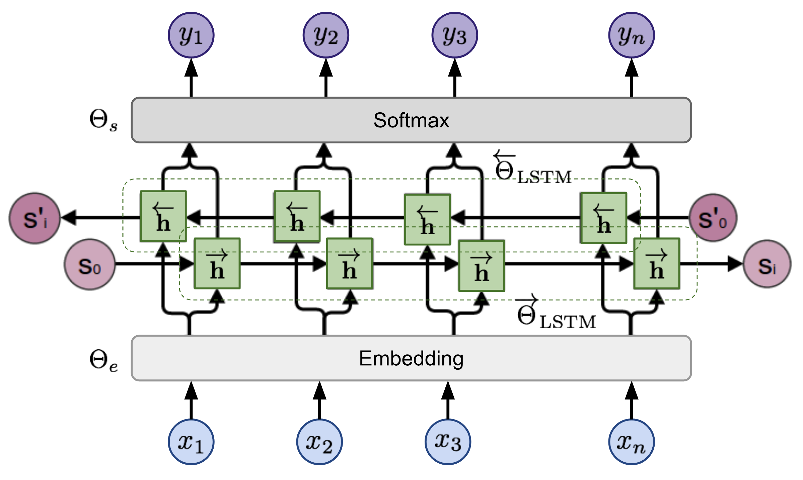
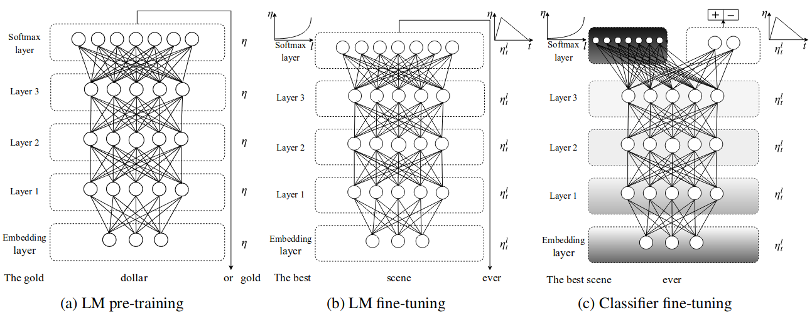

<!doctype html>
<html lang="en">
    <head>
        <meta charset="utf-8">
        <meta name="viewport" content="width=device-width, initial-scale=1.0, maximum-scale=1.0, user-scalable=no">

        <title>NLP for Text Classification</title>
        <link rel="stylesheet" href="./css/reveal.css">
        <link rel="stylesheet" href="./css/theme/moon.css" id="theme">
        <link rel="stylesheet" href="./css/highlight/zenburn.css">
        <link rel="stylesheet" href="./css/print/paper.css" type="text/css" media="print">


    </head>
    <body>

        <div class="reveal">
            <div class="slides"><section  data-markdown><script type="text/template">
## Intro

Scott Mueller

###### smueller.tampa.ai@gmail.com
</script></section><section  data-markdown><script type="text/template">## Tampa.ai

Looking for Presenters
</script></section><section  data-markdown><script type="text/template"># NLP for Text Classification

https://meanderingstream.github.io/nlp_for_text_classification
</script></section><section  data-markdown><script type="text/template">* Embeddings vs Encodings
* Transfer Learning
* ELMO
* UMLFIT
* BERT
* GPT-2
</script></section><section  data-markdown><script type="text/template">## Embedding vs Encoding</script></section><section  data-markdown><script type="text/template">## Embedding


Word2Vec and GloVe are Embeddings[1]</script></section><section  data-markdown><script type="text/template">## Autoencoder

[2]</script></section><section  data-markdown><script type="text/template">## NLP Encoder

[3]
</script></section><section  data-markdown><script type="text/template">## Transfer Learning

[4]
</script></section><section  data-markdown><script type="text/template">## Transfer Learning in Text

* Language Model

Predict the next word, given the previous word</script></section><section  data-markdown><script type="text/template">## Language Model

the quick brown _______

|

Train on self-supervised, easy to capture, text dataset

Any text documents will work

Like wikitext-103</script></section><section  data-markdown><script type="text/template">## What is important about a Language Model 

Expresses Syntax

Models Semantics
</script></section><section  data-markdown><script type="text/template">## How Big?

Easy to Obtain - How big do you want?

Takes time to build the reusable model
</script></section><section  data-markdown><script type="text/template">## ElMO

Embeddings from Language Model

[5]
</script></section><section  data-markdown><script type="text/template">## ULMFiT Approach

[4]
</script></section><section  data-markdown><script type="text/template">## ULMFiT

[4]
</script></section><section  data-markdown><script type="text/template">## Avoiding Forgetfulness

* Freezing Layers - Gradual Unfreezing

[6]
</script></section><section  data-markdown><script type="text/template">## Transformer

[5]
</script></section><section  data-markdown><script type="text/template">## OpenAI GPT

[5]
</script></section><section  data-markdown><script type="text/template">## BERT

[5]
</script></section><section  data-markdown><script type="text/template">## BERT LM Approach

Randomly mask 15% of tokens in each sequence. Because if we only replace masked tokens with a special placeholder [MASK], the special token would never be encountered during fine-tuning. Hence, BERT employed several heuristic tricks:
(a) with 80% probability, replace the chosen words with [MASK];
(b) with 10% probability, replace with a random word;
(c) with 10% probability, keep it the same.
</script></section><section  data-markdown><script type="text/template">## BERT LM Continued

The model only predicts the missing words, but it has no information on which words have been replaced or which words should be predicted. The output size is only 15% of the input size.
</script></section><section  data-markdown><script type="text/template">
## GPT-2

* 1.5 Billion parameters

* Zero-shot transfer

* No fine tuning
</script></section><section  data-markdown><script type="text/template">## GPT-2 Zero Shot

* Translation: English sentence = Chinese sentence

* Q&A: question = answer

* Summarization: add TL;DR: after articles
</script></section><section  data-markdown><script type="text/template">## Using UMLFiT for Sentiment Analysis

[IMDb Sentiment Analysis Notebook](./nbs/lesson3-imdb.pdf)
</script></section><section  data-markdown><script type="text/template">## How could you use NLP?

Text portion of Insurance Claim, any hint of a fall in hospital?

Chat History, problem chats that need supervisor attention</script></section><section  data-markdown><script type="text/template">## Genomics

[7]
https://github.com/kheyer/Genomic-ULMFiT</script></section><section  data-markdown><script type="text/template">[7]
</script></section><section  data-markdown><script type="text/template">[7]
</script></section><section  data-markdown><script type="text/template">Questions?
</script></section><section  data-markdown><script type="text/template">## Study Group

https://ai-tampa-study-group.github.io/meetings/
</script></section><section  data-markdown><script type="text/template">### Resources
[1] https://medium.com/mlreview/understanding-building-blocks-of-ulmfit-818d3775325b

[2] https://en.wikipedia.org/wiki/Autoencoder

[3] https://arxiv.org/pdf/1801.06146.pdf

[4] https://towardsdatascience.com/transfer-learning-in-nlp-for-tweet-stance-classification-8ab014da8dde</script></section><section  data-markdown><script type="text/template">
### More Resources

[5] https://lilianweng.github.io/lil-log/2019/01/31/generalized-language-models.html

[6] https://yashuseth.blog/2018/06/17/understanding-universal-language-model-fine-tuning-ulmfit/

[7] https://github.com/kheyer/Genomic-ULMFiT
</script></section><section  data-markdown><script type="text/template">
[KnowFalls.com](https://www.KnowFalls.com/)

Looking for Founder Fastai ML Practitioners

Elixir, Functional Programming, Rails, Experience
</script></section></div>
        </div>

        <script src="./lib/js/head.min.js"></script>
        <script src="./js/reveal.js"></script>

        <script>
            function extend() {
              var target = {};
              for (var i = 0; i < arguments.length; i++) {
                var source = arguments[i];
                for (var key in source) {
                  if (source.hasOwnProperty(key)) {
                    target[key] = source[key];
                  }
                }
              }
              return target;
            }

            // Optional libraries used to extend on reveal.js
            var deps = [
              { src: './lib/js/classList.js', condition: function() { return !document.body.classList; } },
              { src: './plugin/markdown/marked.js', condition: function() { return !!document.querySelector('[data-markdown]'); } },
              { src: './plugin/markdown/markdown.js', condition: function() { return !!document.querySelector('[data-markdown]'); } },
              { src: './plugin/highlight/highlight.js', async: true, callback: function() { hljs.initHighlightingOnLoad(); } },
              { src: './plugin/zoom-js/zoom.js', async: true },
              { src: './plugin/notes/notes.js', async: true },
              { src: './plugin/math/math.js', async: true }
            ];

            // default options to init reveal.js
            var defaultOptions = {
              controls: true,
              progress: true,
              history: true,
              center: true,
              transition: 'default', // none/fade/slide/convex/concave/zoom
              dependencies: deps
            };

            // options from URL query string
            var queryOptions = Reveal.getQueryHash() || {};

            var options = {"transition":"fade"};
            options = extend(defaultOptions, options, queryOptions);
        </script>


        <script>
          Reveal.initialize(options);
        </script>
    </body>
</html>
